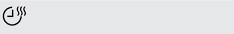

За по-лесно зареждане с пране или по-лесен
За по-лесно зареждане с пране или по-лесен | Символ на дисплея | Описание на символите |
|---|---|
| избор на отложен старт (30 мин. – 20 ч.) | |
| показание на времетраенето на цикъла | |
| изкл. звънец | |
| вкл. защита за деца | |
|
степен на сушене: сухо за гладене, сухо за приби‐ ране, сухо за прибиране +, екстра |
|
| индикатор: източете контейнера за вода | |

|
индикатор: почистете филтъра |
| индикатор: проверете кондензатора | |
|  | вкл. опция време |
| избор на продължителност на програма (10 мин. – 2ч.) | |
| индикатор: фаза на сушене | |
| индикатор: фаза на защита против намачкване | |
| индикатор: фаза на охлаждане |
1) Заедно с програмата можете да зададете 1 или повече опции.
2) Вижте глава ОПЦИИ: Време на програма Вълна
1) За частично натоварване времето за цикъл е по-кратко и уредът използва по-малко енергия.
2) Неправилната температура на околната среда и/или лошо центрофугираното пране може да
удължи времето за цикъл и да увеличи консумацията на енергия.